减法和加法的运算很相似。例如，6 543–5 678的计算过程如下：
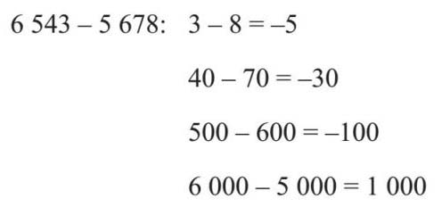
这样可得到–5+(–30)+(–100)+1 000=–135+1 000=865。我们可以再次使用上一章逐列计算的方法，但是与加法计算中总是出现多余的数不同，减法计算中我们需要处理相反的问题。如果用上一章的解题思路，就有：
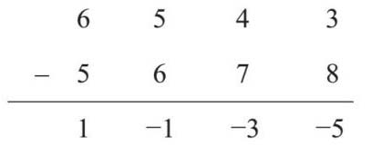
这样做没有多大意义。为了得出正确的答案，我需要借位。但根据我的一名学生所说，因为借的位永远不会还，所以借位的最佳说法应是“偷位”。
当注意到3–8的结果是负数时，就可以从上一列数字中借位来为3助力。于是4被划掉并减1，得到3。在这里借一抵十，所以借位后3变成13。13–8=5，于是就有：
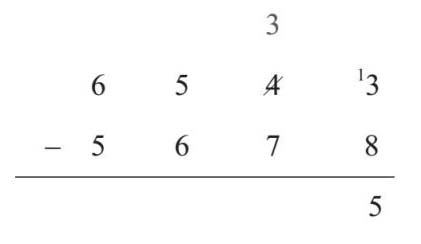
下一步的运算为3–7=–4。所以，还得继续从左边相邻的列（百位）借位。100等于10个10，所以这时十位上的3变成了13，这样我就可以继续往下计算了：
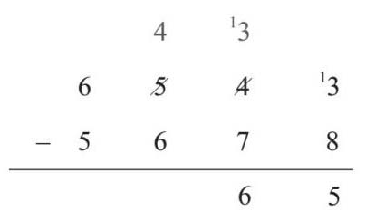
下一步运算也需要到千位上借位。从千位借位后，千位数相减，结果为0：
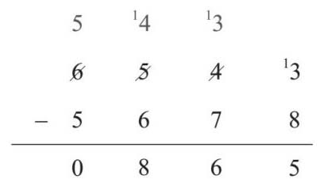
于是，我们就有6 543–5 678=865。
从前文中，我们可以看出加法和乘法关系密切，减法和除法的关系也一样。计算3 780÷15，就是在解决“3 780中有多少个15”这个问题，也是在回答“从3 780中不断减掉15，要减多少次”这个问题。实际上，这种被称为“分割法”的解题思路是应对除法问题的关键。在这种方法中，我不断从被除数中减去除数，直到结果为0为止。
首先，我知道2×15=30，所以200×15一定等于3 000。从3 780中减掉3 000就是：
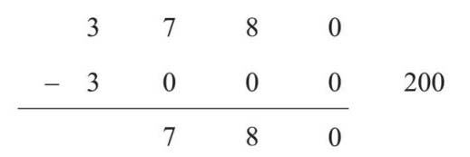
到这一步，还剩下780。对于15，因为有4×15=60，所以40×15=600。好了，下一步我再减掉它。
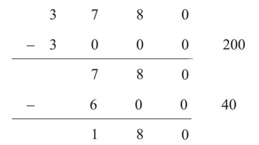
最后，还剩下12个15，减完为止：
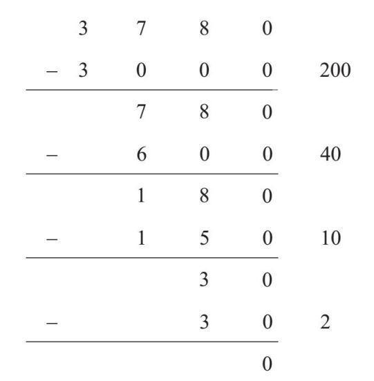
我统计了一下：200+40+10+2=252，所以3 780÷15=252。显然，如果在乘法上多用功，那么在做除法时用的步骤就会少。
长除法运算也有些复杂，但也是按照相似的办法。
先从左边开始。因为15有两个数位，所以我会考虑前两个数字中有多少个15？两个15等于30，用减法计算余数：
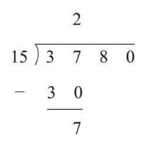
现在，我把注意力转移到7和8，我把8落到7的旁边。那么，78里有多少个15？5个15是75。
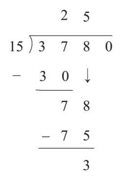
最后，我把0落下来，那么30中有多少个15呢？
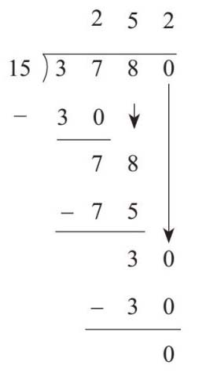
短除法和长除法一样，但在短除法中，我们会心算出上一步的余数，并把它们放入下一次计算中。短除法可以把分数方便地转换成小数。如果想知道5除以8是不是小数，那么可以计算5÷8：
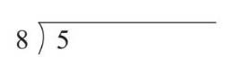
5中包含0个8，所以余数为5。在商的位置先要写上0，后面还要加上小数点，不然就没有地方写余数了。这样做的道理是因为5=5.0，商里的小数点与5.0中的小数点对应：
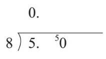
50除以8，商为6，余2（如果需要，我可以在小数点之后继续加0）：
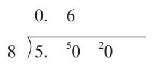
20除以8得到的商是2，余数是4：
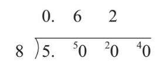
40除以8正好得到商为5：
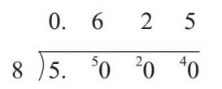
所以，我们知道
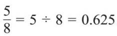
。这种方法适用于任何分数，对于较难的运算，可以使用“长除法”。在下一章里，我们将遇到一些较难计算的分数。